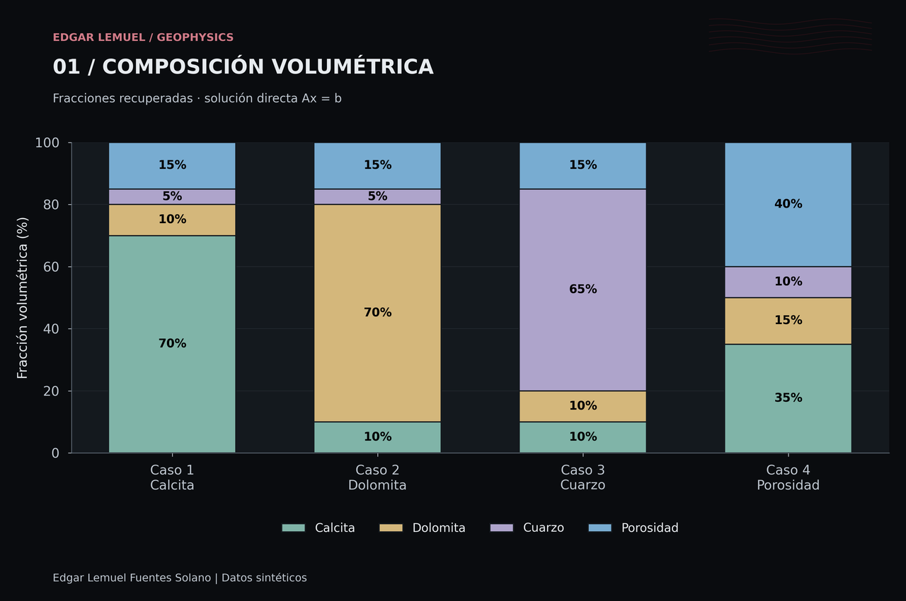
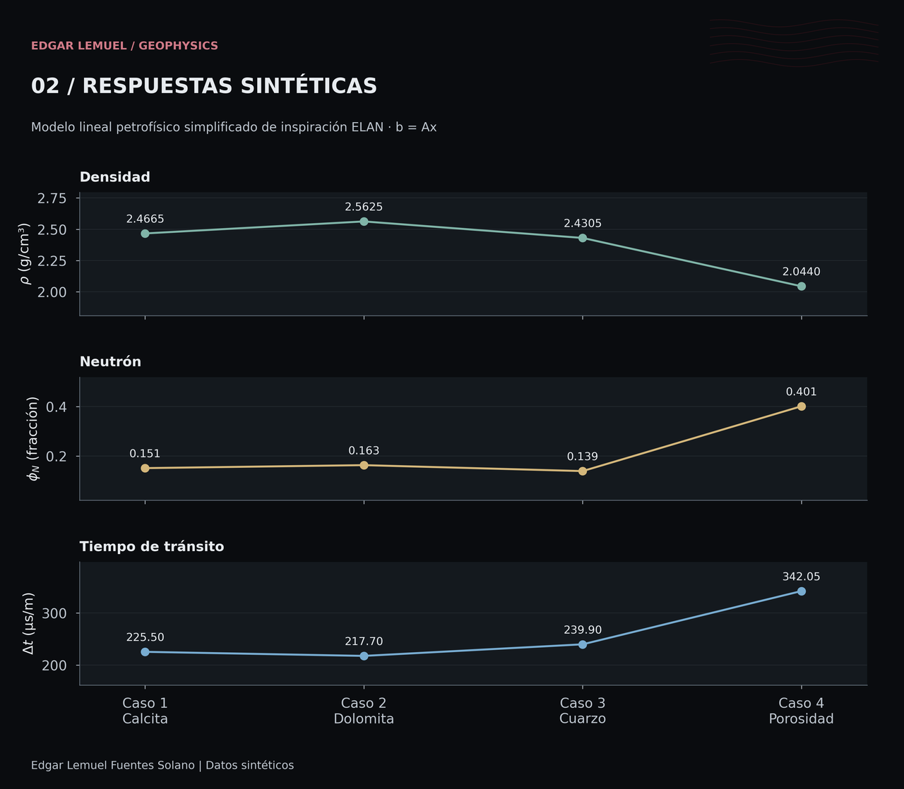
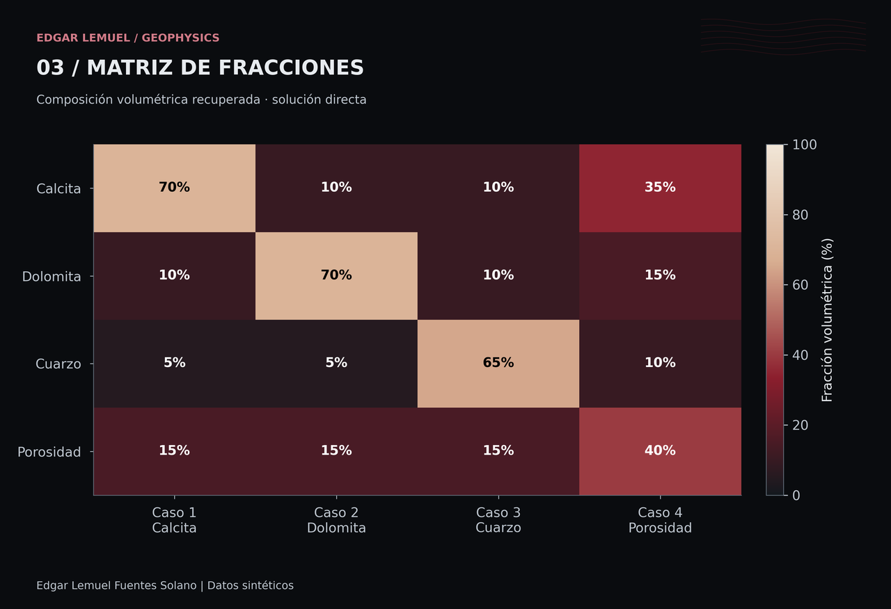
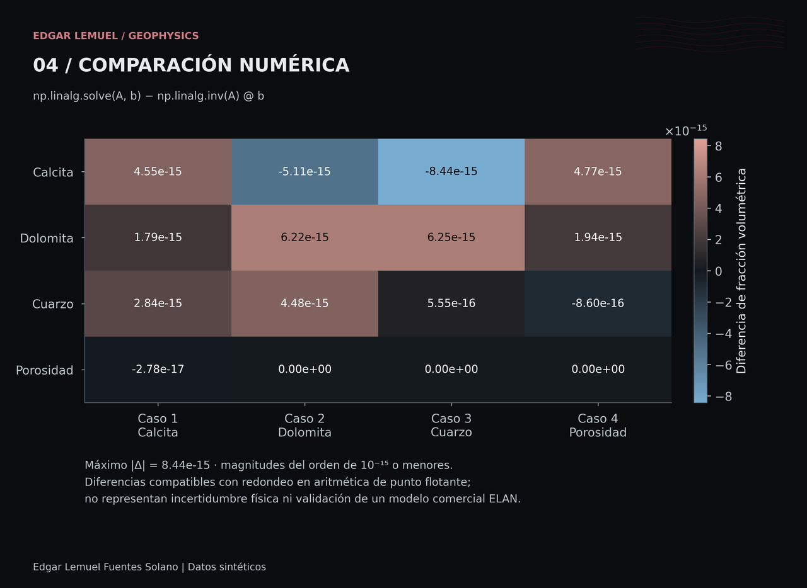

Geofísica computacional / Caso de estudio 01
Modelamiento petrofísico mediante inversión lineal
Estimación de fracciones volumétricas mediante un modelo lineal simplificado de inspiración ELAN, con datos sintéticos.
Alcance científico. Ejercicio sintético de consistencia algebraica. No utiliza registros reales ni valida el software comercial ELAN.
01 / Planteamiento
De la composición a los registros sintéticos
El objetivo es estudiar la relación entre composición, respuestas de registros y resolución numérica de un sistema lineal. Se proponen cuatro composiciones conocidas, se generan sus respuestas y se recuperan las fracciones de calcita, dolomita, cuarzo y porosidad.
Formulación Ax = b
x = [Vcal, Vdol, Vcuarzo, phi]ᵀ contiene las cuatro fracciones adimensionales. Para cada escenario se calcula b = Ax.
[ 2.71 2.87 2.65 1.00 ]
A = [ 0.00 0.02 -0.02 1.00 ]
[156 143 180 620 ]
[ 1.00 1.00 1.00 1.00 ]
b = [rho, phiN, dt, 1]ᵀLas filas representan densidad en g/cm³, respuesta neutrónica en fracción, tiempo de tránsito en µs/m y cierre volumétrico.
Datos y supuestos
- Respuestas lineales con los coeficientes fijos del ejercicio.
- Cierre:
Vcal + Vdol + Vcuarzo + phi = 1. - Cuatro componentes y cuatro ecuaciones; las respuestas se generan con la misma matriz que se utiliza para invertir.
- Sin ruido de medición, calibración de herramienta ni efectos ambientales.
Los coeficientes son parámetros del ejercicio; no constituyen una calibración de herramienta o formación.
Cuatro escenarios sintéticos
| Escenario | Calcita | Dolomita | Cuarzo | Porosidad |
|---|---|---|---|---|
| 1 · Predominio de calcita | 70 % | 10 % | 5 % | 15 % |
| 2 · Predominio de dolomita | 10 % | 70 % | 5 % | 15 % |
| 3 · Predominio de cuarzo | 10 % | 10 % | 65 % | 15 % |
| 4 · Alta porosidad | 35 % | 15 % | 10 % | 40 % |
02 / Resolución numérica
Dos soluciones del mismo sistema
Solución directa
np.linalg.solve(A, b) resuelve el sistema lineal para recuperar las cuatro fracciones.
Inversa explícita
np.linalg.inv(A) @ b calcula la inversa y la multiplica por el vector de respuestas. Se conserva como procedimiento de comparación.
| Escenario | Densidad (g/cm³) | Neutrón (fracción) | Tiempo de tránsito (µs/m) |
|---|---|---|---|
| 1 | 2.4665 | 0.151 | 225.50 |
| 2 | 2.5625 | 0.163 | 217.70 |
| 3 | 2.4305 | 0.139 | 239.90 |
| 4 | 2.0440 | 0.401 | 342.05 |
Precisión de las fracciones recuperadas
Ambos métodos recuperan las composiciones propuestas con diferencias de punto flotante. En la ejecución documentada con NumPy 2.2.3:
- Máximo error absoluto · solve
1.3322676295501878e-14- Máximo error absoluto · inversa
8.548717289613705e-15- Máxima diferencia absoluta entre métodos
8.43769498715119e-15
Los errores se calculan frente a las fracciones propuestas. Todas estas magnitudes son diferencias de fracción volumétrica, no porcentajes. Los últimos dígitos pueden variar entre plataformas y bibliotecas numéricas; este ejemplo no permite concluir que un método sea superior.
La recuperación de las cuatro composiciones muestra la consistencia del sistema lineal. Las diferencias entre métodos corresponden al redondeo de las operaciones en punto flotante, no a cambios interpretables en la composición.
03 / Visualización científica
Cuatro lecturas del modelo
Las vistas web proceden de las figuras científicas originales. Selecciona una figura para verla a resolución completa; los enlaces PNG y SVG dan acceso a los archivos originales.
Figuras en tema oscuro. El contenido numérico es idéntico en ambos temas.


01 / Composición volumétrica
Fracciones recuperadas con solución directa, en porcentaje. Las barras apiladas muestran los cuatro componentes y el cierre volumétrico.



02 / Respuestas sintéticas
Densidad, neutrón y tiempo de tránsito en tres escalas independientes. Las líneas unen escenarios discretos como guía visual.



03 / Matriz de fracciones
Comparación de composición por mineral y escenario. La escala fija de 0 a 100 % es la misma en ambos temas.



04 / Comparación numérica
Diferencia solve − inversa en fracción volumétrica. La escala científica hace visibles las magnitudes del orden de 10⁻¹⁵ y menores; no representan incertidumbre física.

04 / Recursos
Explorar el proyecto
Consulta la implementación en Python y la documentación de la matriz de respuestas, los escenarios y los métodos de solución. Las instrucciones de reproducción están en la documentación técnica.
Regresar a proyectos destacados